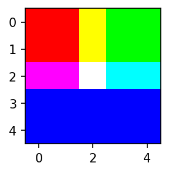

import matplotlib.pyplot as plt
import numpy as np
#!pip install opencv-python
import cv2 01wk-1 – for lecture
matplotlib
seaborn
plotnine
plotly
박스플랏, 히스토그램

강의영상
Import
import matplotlib
matplotlib.rcParams['figure.figsize'] = (3, 2) # 가로 6, 세로 4 크기의 그림
matplotlib.rcParams['figure.dpi'] = 150Boxplot
motivating example
- 통계란?
- 평균 좋아해요?
# 예제1 – 전북고등학교: 평균은 좋은 측정값인가?
- 전북고등학교에서 통계학을 수업하는 A선생님과 B선생님의 있다.
y1=[75,75,76,76,77,77,78,79,79,98] # A선생님에게 통계학을 배운 학생의 점수들
y2=[76,76,77,77,78,78,79,80,80,81] # B선생님에게 통계학을 배운 학생의 점수들 #
matplotlib으로 boxplot 그리기
- A반 학생들의 박스플랏 그리기
- B반 학생들의 박스플랏 그리기
- A반 학생들의 점수와 B반 학생들의 점수를 나란히 박스플랏으로 그리자.
boxplot이란?
- Galarnyk (2023)
Galarnyk, Michael. 2023. “Python_tutorials.” https://github.com/mGalarnyk/Python_Tutorials.
Code
np.random.seed(916170)
# connection path is here: https://stackoverflow.com/questions/6146290/plotting-a-line-over-several-graphs
mu, sigma = 0, 1 # mean and standard deviation
s = np.random.normal(mu, sigma, 1000)
fig, axes = plt.subplots(nrows = 1, ncols = 1, figsize=(10, 5))
# rectangular box plot
bplot = axes.boxplot(s,
vert=False,
patch_artist=True,
showfliers=True, # This would show outliers (the remaining .7% of the data)
positions = [0],
boxprops = dict(linestyle='--', linewidth=2, color='Black', facecolor = 'red', alpha = .4),
medianprops = dict(linestyle='-', linewidth=2, color='Yellow'),
whiskerprops = dict(linestyle='-', linewidth=2, color='Blue', alpha = .4),
capprops = dict(linestyle='-', linewidth=2, color='Black'),
flierprops = dict(marker='o', markerfacecolor='green', markersize=10,
linestyle='none', alpha = .4),
widths = .3,
zorder = 1)
axes.set_xlim(-4, 4)
plt.xticks(fontsize = 14)
axes.set_yticks([])
axes.annotate(r'',
xy=(-.73, .205), xycoords='data',
xytext=(.66, .205), textcoords='data',
arrowprops=dict(arrowstyle="|-|",
connectionstyle="arc3")
);
axes.text(0, .25, "Interquartile Range \n(IQR)", horizontalalignment='center', fontsize=18)
axes.text(0, -.21, r"Median", horizontalalignment='center', fontsize=16);
axes.text(2.65, -.15, "\"Maximum\"", horizontalalignment='center', fontsize=18);
axes.text(-2.65, -.15, "\"Minimum\"", horizontalalignment='center', fontsize=18);
axes.text(-.68, -.24, r"Q1", horizontalalignment='center', fontsize=18);
axes.text(-2.65, -.21, r"(Q1 - 1.5*IQR)", horizontalalignment='center', fontsize=16);
axes.text(.6745, -.24, r"Q3", horizontalalignment='center', fontsize=18);
axes.text(.6745, -.30, r"(75th Percentile)", horizontalalignment='center', fontsize=12);
axes.text(-.68, -.30, r"(25th Percentile)", horizontalalignment='center', fontsize=12);
axes.text(2.65, -.21, r"(Q3 + 1.5*IQR)", horizontalalignment='center', fontsize=16);
axes.annotate('Outliers', xy=(2.93,0.015), xytext=(2.52,0.20), fontsize = 18,
arrowprops={'arrowstyle': '->', 'color': 'black', 'lw': 2},
va='center');
axes.annotate('Outliers', xy=(-3.01,0.015), xytext=(-3.41,0.20), fontsize = 18,
arrowprops={'arrowstyle': '->', 'color': 'black', 'lw': 2},
va='center');- 가장 큰 값이 100%, 가장 작은 값이 0%, 중간값이 50%
boxplot을 언제 쓰면 좋을까?
- 박스플랏의 장점
- 박스플랏이 이용되는 범위
- 박스플랏을 쓰는 경우
Histogram
motivating example
- 전북고예제에서 우리의 소망:
# 예제2 – 정규분포 전북고등학교: 평균은 좋은 측정값인가?
- A반과 B반의 통계학 성적이 아래와 같다고 하자.
np.random.seed(43052)
y1 = np.random.randn(10000)
y2 = np.random.randn(10000) + 0.5 #
- 정규분포가정은 어떻게 할 수 있나? (= 데이터를 보고 어떻게 정규분포라고 알 수 있는가?): 데이터의 히스토그램을 그려서 종 모양이 되는지 확인해본다.1
1 아직 초보단계라서 이것밖에 모를 수 있어요
histogram 이란?
- 히스토그램: X축이 변수의 구간, Y축은 그 구간에 포함된 빈도를 의미하는 그림
histogram 그리기
- 히스토그램의 예시1 – 기본플랏, ;으로 결과 생략하기
y=[10,11,12,15,16,20,21,22,23,24,25]- 히스토그램 예시2 – bins 옵션이용
plt.hist(y,bins=3)(array([3., 2., 6.]),
array([10., 15., 20., 25.]),
<BarContainer object of 3 artists>)
- 히스토그램 예시3 – bins=3 옵션의 결과값 해석
- 히스토그램 예시4 – bins=7 옵션의 결과값 해석
- 히스토그램 예시5 – range 옵션
- 히스토그램 예시6 – 나란히 그리기
np.random.seed(43052)
y1 = np.random.randn(10000)
y2 = np.random.randn(10000) + 0.5 Histogram equalization
예비학습1: 이미지자료 다운로드
- ref: https://en.wikipedia.org/wiki/Histogram_equalization
!wget https://upload.wikimedia.org/wikipedia/commons/0/08/Unequalized_Hawkes_Bay_NZ.jpg
img = cv2.imread('Unequalized_Hawkes_Bay_NZ.jpg')
!rm Unequalized_Hawkes_Bay_NZ.jpg--2023-09-04 13:00:14-- https://upload.wikimedia.org/wikipedia/commons/0/08/Unequalized_Hawkes_Bay_NZ.jpg
Resolving upload.wikimedia.org (upload.wikimedia.org)... 103.102.166.240, 2001:df2:e500:ed1a::2:b
Connecting to upload.wikimedia.org (upload.wikimedia.org)|103.102.166.240|:443... connected.
HTTP request sent, awaiting response... 200 OK
Length: 110895 (108K) [image/jpeg]
Saving to: ‘Unequalized_Hawkes_Bay_NZ.jpg’
Unequalized_Hawkes_ 100%[===================>] 108.30K 553KB/s in 0.2s
2023-09-04 13:00:15 (553 KB/s) - ‘Unequalized_Hawkes_Bay_NZ.jpg’ saved [110895/110895]
예비학습2: 이미지자료의 이해
비밀1: 이미지는 사실 숫자들의 집합이었음.
- 예시1 – 2d array = 흑백이미지
_img1 = np.array([0,30,90,120,150,180,210,240,255]).reshape(3,3)
_img1array([[ 0, 30, 90],
[120, 150, 180],
[210, 240, 255]])plt.imshow(_img1,cmap='gray')
plt.colorbar()<matplotlib.colorbar.Colorbar at 0x7f385a14c450>
- 예시2 – 2d array = 흑백이미지
_img2 = np.array([0,20,40,60,80,100,120,140,160]).reshape(3,3)
_img2array([[ 0, 20, 40],
[ 60, 80, 100],
[120, 140, 160]])plt.imshow(_img2,cmap='gray',vmin=0,vmax=255)
plt.colorbar()<matplotlib.colorbar.Colorbar at 0x7f385a04e590>
- 예시3 – 나란히 그리기
_img3 = np.concatenate([_img1,_img2],axis=1)
_img3array([[ 0, 30, 90, 0, 20, 40],
[120, 150, 180, 60, 80, 100],
[210, 240, 255, 120, 140, 160]])plt.imshow(_img3,cmap='gray')<matplotlib.image.AxesImage at 0x7f3859fda8d0>
비밀2: 칼라이미지는 red + green + blue 의 조합으로 표현가능 (다른방식도 가능)
- ref: https://en.wikipedia.org/wiki/RGB_color_model

- 예시1 – 3d array = 칼라이미지
r = np.array(
[[255, 255, 255, 0, 0],
[255, 255, 255, 0, 0],
[255, 255, 255, 0, 0],
[ 0, 0, 0, 0, 0],
[ 0, 0, 0, 0, 0]]
)
g = np.array(
[[ 0, 0, 255, 255, 255],
[ 0, 0, 255, 255, 255],
[ 0, 0, 255, 255, 255],
[ 0, 0, 0, 0, 0],
[ 0, 0, 0, 0, 0]]
)
b = np.array(
[[ 0, 0, 0, 0, 0],
[ 0, 0, 0, 0, 0],
[255, 255, 255, 255, 255],
[255, 255, 255, 255, 255],
[255, 255, 255, 255, 255]]
)
z = np.array(
[[ 0, 0, 0, 0, 0],
[ 0, 0, 0, 0, 0],
[ 0, 0, 0, 0, 0],
[ 0, 0, 0, 0, 0],
[ 0, 0, 0, 0, 0]]
) red = np.stack([r,z,z],axis=-1)
green = np.stack([z,g,z],axis=-1)
blue = np.stack([z,z,b],axis=-1)plt.imshow(red)<matplotlib.image.AxesImage at 0x7f52f5735890>
plt.imshow(green)<matplotlib.image.AxesImage at 0x7f52f57794d0>
plt.imshow(blue)<matplotlib.image.AxesImage at 0x7f52f57f0ed0>
plt.imshow(red+green+blue)<matplotlib.image.AxesImage at 0x7f52f5740c90>
- 예시2: R,G,B를 같은 비율로 섞으면 다시 흑백이미지가 된다.
arr2 = np.array(
[[10, 40],
[80, 60]]
)
arr2array([[10, 40],
[80, 60]])arr3 = np.stack([arr2,arr2,arr2],axis=-1)
plt.imshow(arr3)<matplotlib.image.AxesImage at 0x7f52ef74a550>- arr3은 칼라이미지인데(=3d array 인데), RGB가 같은 비율로 섞여서 흑백처럼 보임
plt.imshow(arr2,cmap='gray',vmin=0,vmax=255)
plt.colorbar()<matplotlib.colorbar.Colorbar at 0x7f52ef5011d0>
- arr2는 원래 흑백이미지 였음 (=원래 2d array 였음)
히스토그램 이퀄라이제이션
- 이미지를 rgb로 각각 분리하고 각 색깔들의 히스토그램을 그려보자.
- cv2.equalizeHist()를 이용하여 분포의 모양은 대략적으로 유지하면서 값을 퍼트리자!
- 변환이후의 그림을 그려본다면?
숙제
- HE(Histogram Equalization)을 이용하여 아래주소에 저장된 이미지의 명암비를 보정하라
{kind=link}